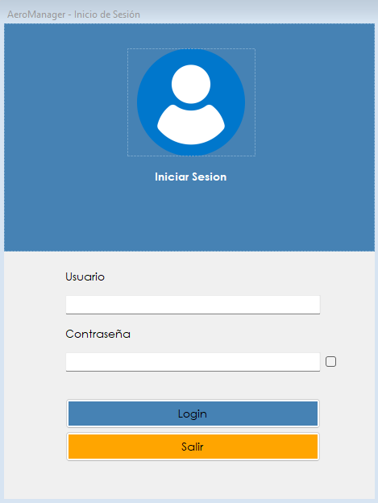

Es la primera pantalla del sistema. Identifica al usuario y determina a qué módulos va a poder acceder durante la sesión.
AeroManager no permite usar ninguna función sin una sesión iniciada. Esta pantalla valida el usuario y la contraseña contra la base de datos y, si son correctos, abre el menú principal con las opciones habilitadas para el rol de esa persona. Dos usuarios distintos ven menús distintos: lo que aparece depende de las patentes que tenga asignado su rol.
Es la pantalla que se abre sola al ejecutar el sistema. También vuelve a aparecer después de cambiar la contraseña, y desde la opción Usuario › Relogin del menú principal.

| Control | Para qué se usa |
|---|---|
| Usuario | Nombre de usuario asignado por el administrador. No es el nombre y apellido de la persona ni su documento. |
| Contraseña | Clave personal. Se muestra oculta mientras se escribe. |
| Casilla de la derecha | Muestra la contraseña en texto legible mientras está tildada, para verificar lo que se escribió antes de ingresar. |
| Login | Valida los datos ingresados y, si son correctos, abre el menú principal. |
| Salir | Cierra AeroManager sin iniciar sesión. |
| Situación | Qué significa y qué hacer |
|---|---|
| El sistema avisa que el usuario o la contraseña son incorrectos | Alguno de los dos datos no coincide. Conviene tildar la casilla para verificar la clave escrita y revisar que no haya quedado activado el bloqueo de mayúsculas. Cada intento fallido queda contabilizado. |
| El sistema avisa que el usuario está bloqueado | Se superó la cantidad de intentos fallidos permitida y el sistema bloqueó la cuenta como medida de seguridad. El usuario no puede desbloquearse a sí mismo: tiene que pedirle a un administrador que lo haga desde Administrador › Gestión de Usuarios. |
| El sistema avisa que el usuario está inactivo | La cuenta fue dada de baja. Un administrador tiene que reactivarla desde Administrador › Gestión de Usuarios antes de poder usarla. |
| Después de ingresar se abre la pantalla de reparación | El sistema detectó inconsistencias en los datos al validar los dígitos verificadores. Ver el apartado siguiente. |
| El menú principal aparece con pocas opciones | No es un error. El menú muestra únicamente los módulos habilitados por las patentes del rol del usuario. Si falta una opción que debería estar, hay que pedirle al administrador que revise el rol desde Administrador › Gestión de Perfiles. |
Cada vez que alguien inicia sesión, AeroManager recalcula los dígitos verificadores de las tablas y los compara con los valores almacenados. Si algún dato fue alterado por fuera del sistema, la validación falla y no se abre el menú principal.
Atención. Si se detectan inconsistencias, el sistema abre la pantalla de reparación, y solamente puede operarla un usuario con rol de administrador. Desde ahí se puede recalcular los dígitos verificadores o restaurar la base desde un respaldo. Mientras las inconsistencias no se resuelvan, ningún usuario puede entrar al sistema.
El detalle de esa pantalla está en el tema Reparar inconsistencia.